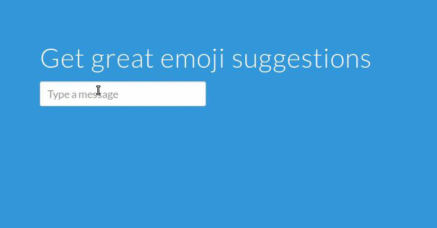

Emoji Predictor is a way to get recommendations for what emoji to used based on entered text. Matt Tinsley and I created it at Hack@Teal 2015.
The site uses Flask, Python, and Elasticsearch on the back end, with JavaScript and the other standard web technologies on the front end.
Because it relies on Matt's personal information, we weren't able to leave the site up after the hackathon. In lieu of a live demo, here's a recording of what it looks like (please forgive the fact that my laptop doesn't display emojis well):
